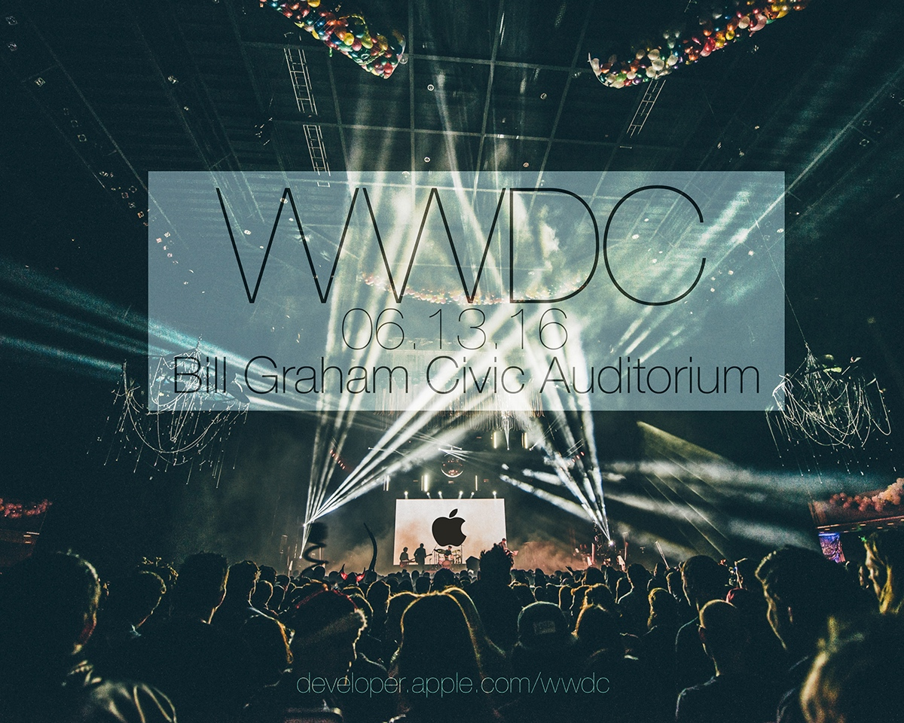

Event Branding: Worldwide Developers Conference
Software Used: Adobe Photoshop
Created for Matt Lechowick's Graphics on the Computer, a lower division studio course. Project guidelines asked for conveying information about an event, delivered with an integrated branding aesthetic grounded in applied research. Two images being incorporated with text in order to capture the tone or culture of the event itself was the essential constraint of the prompt. Inspired by prior research on Apple, Inc’s marketing campaigns and general branding aesthetic, I chose to focus on the company’s annual event known as the World Wide Developer’s Conference (WWDC). In the past, this event had always been held in San Francisco. There is always excitement surrounding WWDC, apparent in how tickets sell out almost immediately after going live. As such, I chose to use an image from an unrelated music concert also in Bill Graham Civic Auditorium, the same venue that's historically been host to Apple's annual WWDC to convey a tangible sense of hype and buzz. The Apple logo rendered as being projected on center stage in full view of the depicted audience was the second external input, to cohesively unify the poster as branded content.